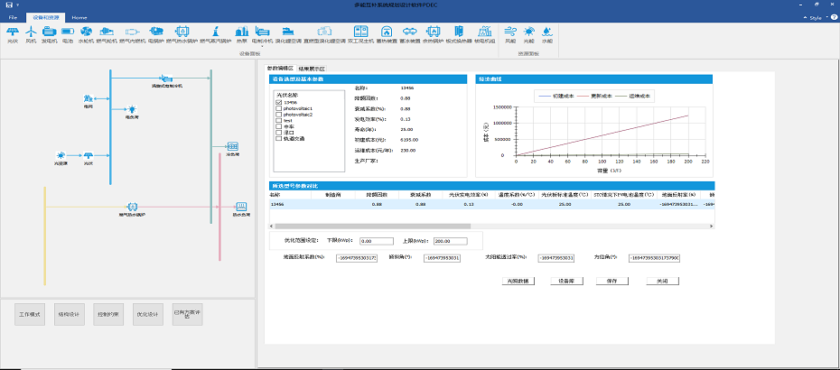

微电网及配电网综合能源优化设计平台
项目介绍
微网是指由分布式电源、能量转换装置、负荷、监控和保护装置等汇集而成的小型发配电系统，是一个能够实现自我控制和管理的自治系统。微网可以看作是小型的电力系统，它具备完整的发电和配电功能，可以有效实现网内的能量优化。
配网提供包含分布式电源的发电集群的优化规划软件设计方案，包括设备库、资源库等功能模块的设计方案，基本潮流和时序潮流计算模块的设计方案，分布式电源规划，储能规划，无功配置规划，指标评估算法的优化规划设计方案。
方案：本软件围绕包含柴油发电机、风力发电、光伏发电、水力发电和铅酸蓄电池 等微网系统中的容量配置问题，提出了包含微网全寿命周期内的总成本现值、负荷容量缺失率和污染物排放的多目标优化设计模型。该优化模型在控制策略上，考虑了多台柴油发电机的组合开机方式、储能电池与柴油发电机之间协调控制策略，以及系统备用容量等问题。在优化变量上，选取设备类型和装机容量同时进行设计。能够首先针对配网区域内并网型和独立型微网开展优化规划设计，从经济性、可靠性等系统性指标分析综合能源微网的规划设计方案，并针对已规划好的并网型微网的规划进行了接入配网的经济性与电能质量评估，判断配网接入评估的合理性。含微电网的配电网接入评估软件功能主要包括微网设备容量配置、微网设备调度。
项目架构

效果展示
项目视频